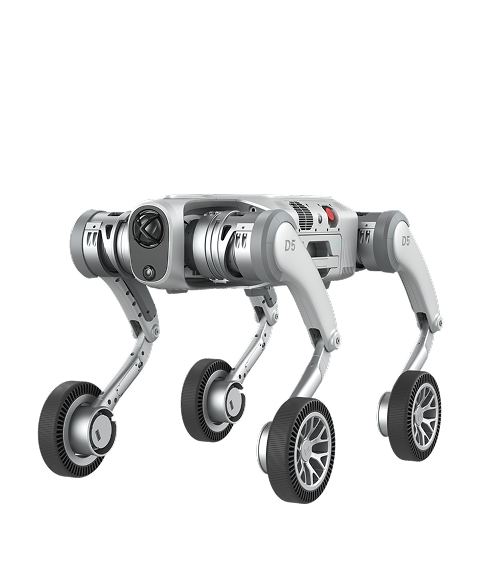
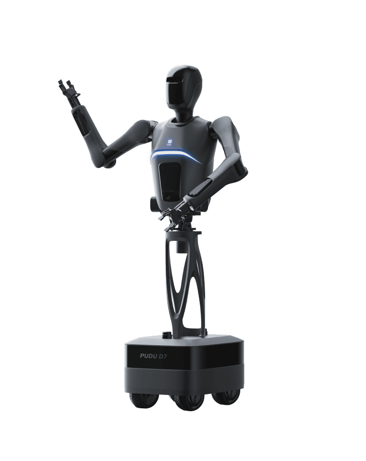

Private · China
Pudu Robotics Company Profile
Commercial service, semi-humanoid, humanoid, and industrial roboticsPudu Robotics facts
- Category
- Commercial service, semi-humanoid, humanoid, and industrial robotics
- Primary focus
- Autonomous Robotics
- Segments
- Service Robots · Commercial Delivery · Commercial Cleaning · Industrial Delivery · Humanoids
- Country
- China →
- Type
- Private
- Ticker
- Not public / not listed
- Website
- Official website →
- Focus
- Commercial service robots, cleaning robots, industrial delivery platforms, semi-humanoid service robots, and humanoid embodied AI systems.
Robologai signal
Pudu Robotics is tracked for autonomous robotics deployment: mobile systems, field robots, delivery, inspection, logistics, or other real-world automation lanes. Tracked products include PUDU D9, PUDU D5, PUDU D7.
Strategic Positioning
Why Pudu Robotics matters to the physical AI economy.
Service RobotsCommercial DeliveryCommercial CleaningIndustrial DeliveryHumanoidsQuadrupedsAutonomous RoboticsChina Robotics
13 intelligence tags attached to this profile.
Company Snapshot
Core signals Robologai tracks for Pudu Robotics.
Product Lineup
Tracked robots and products associated with Pudu Robotics.

Humanoid
PUDU D9
Object manipulation, service robotics, customer engagement
Quote-based; third-party estimates vary · reference signal
Robot profile →

Quadruped delivery and inspection robot
PUDU D5
Outdoor delivery, inspection, security, logistics, research, and all-terrain autonomous mobility
No official public price
Robot profile →

Semi-humanoid service robot
PUDU D7
Semi-humanoid service work, item transport, elevator operation, sorting tasks, and industrial or hospitality assistance
No official public price
Robot profile →

Semi-humanoid service robot
FlashBot Arm
Hospitality and building service delivery, elevator operation, access-card interaction, door opening, and assisted manipulation
No official public price
Robot profile →
Data Quality
Robot coverage, official sources, market type, and review status.
Source Notes
Pudu Robotics source trail.
Market Signal
How Pudu Robotics fits into the robotics economy.
Related Companies